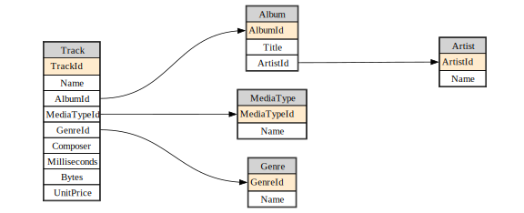

from sqlite_utils import Database
from fastlite import *
from fastcore.utils import *fastlite
A bit of extra usability for sqlite
fastlite provides some little quality-of-life improvements for interactive use of the wonderful sqlite-utils library. It’s likely to be particularly of interest to folks using Jupyter.
Install
pip install fastliteOverview
We demonstrate fastlite‘s features here using the ’chinook’ sample database.
url = 'https://github.com/lerocha/chinook-database/raw/master/ChinookDatabase/DataSources/Chinook_Sqlite.sqlite'
path = Path('chinook.sqlite')
if not path.exists(): urlsave(url, path)
db = Database("chinook.sqlite")Databases have a t property that lists all tables:
dt = db.t
dtAlbum, Artist, Customer, Employee, Genre, Invoice, InvoiceLine, MediaType, Playlist, PlaylistTrack, TrackYou can use this to grab a single table…:
artist = dt.Artist
artist<Table Artist (ArtistId, Name)>…or multiple tables at once:
dt['Artist','Album','Track','Genre','MediaType'][<Table Artist (ArtistId, Name)>,
<Table Album (AlbumId, Title, ArtistId)>,
<Table Track (TrackId, Name, AlbumId, MediaTypeId, GenreId, Composer, Milliseconds, Bytes, UnitPrice)>,
<Table Genre (GenreId, Name)>,
<Table MediaType (MediaTypeId, Name)>]It also provides auto-complete in Jupyter, IPython, and nearly any other interactive Python environment:

Column work in a similar way to tables, using the c property:
ac = artist.c
acArtistId, NameAuto-complete works for columns too:

Columns, tables, and view stringify in a format suitable for including in SQL statements. That means you can use auto-complete in f-strings.
qry = f"select * from {artist} where {ac.Name} like 'AC/%'"
print(qry)select * from "Artist" where "Artist"."Name" like 'AC/%'You can view the results of a select query using q:
db.q(qry)[{'ArtistId': 1, 'Name': 'AC/DC'}]Views can be accessed through the v property:
album = dt.Album
acca_sql = f"""select {album}.*
from {album} join {artist} using (ArtistId)
where {ac.Name} like 'AC/%'"""
db.create_view("AccaDaccaAlbums", acca_sql, replace=True)
db.q(f"select * from {db.v.AccaDaccaAlbums}")[{'AlbumId': 1,
'Title': 'For Those About To Rock We Salute You',
'ArtistId': 1},
{'AlbumId': 4, 'Title': 'Let There Be Rock', 'ArtistId': 1}]There’s also a shortcut to select from a table – just call it as a function. There’s lots of params you can check out, such as limit:
artist(limit=2)[{'ArtistId': 1, 'Name': 'AC/DC'}, {'ArtistId': 2, 'Name': 'Accept'}]Pass a truthy value as the first param and you’ll get tuples of primary keys and records:
artist(1, limit=2)[(1, {'ArtistId': 1, 'Name': 'AC/DC'}), (2, {'ArtistId': 2, 'Name': 'Accept'})]KW args
If you import from fastlite.kw then the following methods accept **kwargs, passing them along to the first dict param:
createtransformtransform_sqlupdateinsertupsertlookup
from fastlite.kw import *Without the above import, create would require a dict param, but here we just pass keyword args directly:
cats = dt.cats
cats.create(id=int, name=str, weight=float, pk='id')
hl_md(cats.schema, 'sql')CREATE TABLE [cats] (
[id] INTEGER PRIMARY KEY,
[name] TEXT,
[weight] FLOAT
)…the same applies to insert here:
cats.insert(name='meow', weight=6)
(idx,cat),*_ = cats(1)
idx,cat(1, {'id': 1, 'name': 'meow', 'weight': 6.0})Using ** in upsert here doesn’t actually achieve anything, since we can just pass a dict directly – it’s just to show that it works:
cat['name'] = "moo"
cats.upsert(**cat)
cats()[{'id': 1, 'name': 'moo', 'weight': 6.0}]cats.drop()
cats<Table cats (does not exist yet)>Diagrams
If you have graphviz installed, you can create database diagrams:
diagram(db.tables)
Pass a subset of columns to just diagram those. You can also adjust the size and aspect ratio.
diagram(db.t['Artist','Album','Track','Genre','MediaType'], size=8, ratio=0.4)